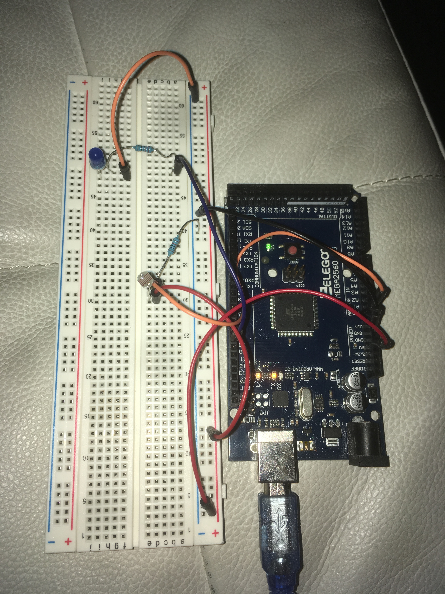
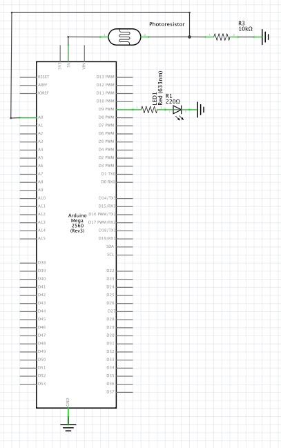

Nightlight
Assignment: Create a circuit using a sensor (photoresistor or thermistor) in a voltage divider to change the state of an LED.
Image: Circuit
This circuit uses a photoresistor to create a nightlight using an LED. When the
photoresistor senses a certain level of light, the LED is turned off. Otherwise
it is dimmed inversely to how much light is sensed.

Gif: Circuit Operation

Circuit Schematic
220 Ohm resistor used for blue LED (calculations in code). 10kOhm
resistor used in series with photoresistor to create voltage divider.

Code
//This project uses a photoresistor to control the brightness of an LED.
//The signal from the voltage divider (between photoresistor and
//10k resistor) is mapped to appropriate values for the LED, and inverted
//to make the LED turn on when the photoresistor is in its high
//resistance state
#define analogInPin A0 // Analog input pin that the photoresistor is connected to
#define analogOutPin 9 // Analog output pin that the LED is connected to
int sensorValue = 0; // value read from the photoresistor
int outputValue = 0; // value output to the LED
void setup() {
Serial.begin(9600); // initialize serial communications at 9600 bps for serial monitor
}
void loop() {
// resistance of photoresistor ranged from ~6k in light
// to 500k+ in darkness
// value from voltage divider ranges from ~100 to ~430 when
// photresister is in series with 10k resistor
sensorValue = analogRead(analogInPin);
// we constrain it to a range between these values to
// avoid unwanted readings
// if we get a reading under our minumum expected value,
// change to minumum expected value
if(sensorValue < 150) sensorValue = 150;
// if we get a reading over our maximum expected value,
// change to maximum expected value
if(sensorValue > 300) sensorValue = 300;
//we want to map these values to entirely off or maximum brightness
outputValue = map(sensorValue, 150, 300, 0, 255);
// invert the reading to turn light on when in darkness
outputValue = 255-outputValue;
//write output value to LED
//the blue LED is in series with a 220Ohm resistor:
// Blue LED forward voltage : 3.3V
// Power supply: 5V
// V = IR -> 5-3.3 = 220I ->
// I = 1.7/220 = 7mA
// 7 mA is a safe amount of power to supply to this LED
analogWrite(analogOutPin, outputValue);
// print status of LED to serial monitor
//if the output value is 0, print that nightlight is off
if(outputValue == 0) Serial.println("Nightlight off.");
//Otherwise print the brightness value of the nightlight
else Serial.println("Nightlight on; brightness: " + String(outputValue));
// longer delay time makes for a less jittery light
delay(20);
}